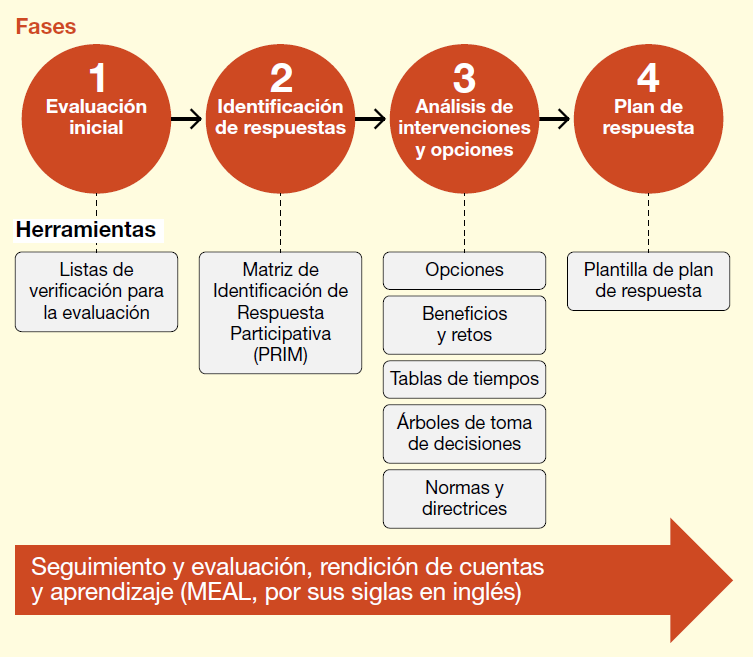
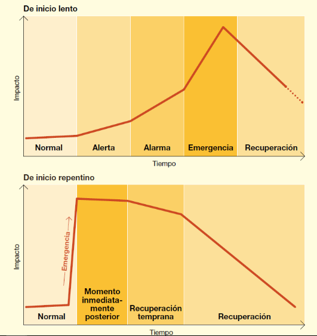

![]()
Resumen
Las laderas volcánicas son zonas fértiles ideales para la agricultura y ganadería, pero se exponen a erupciones volcánicas que pueden generar graves impactos en los pequeños productores, afectando sus medios de subsistencia. Los animales sufren consecuencias crónicas como enfermedades, inanición o muerte por ingesta de ceniza, lo que amenaza la seguridad alimentaria y la salud pública. Las erupciones volcánicas pueden provocar abandono, enfermedades y mortalidad animal por falta de planes de gestión de riesgos. La solución es implementar sistemas integrales que prioricen el bienestar animal y la protección de medios de vida. Existe un vacío en la aplicación de políticas locales que integren prevención, respuesta y rehabilitación. Apropiar y conocer la temática asociada a la gestión de riesgos desastres para proteger al ganado antes, durante y después de erupciones volcánicas promueve la subsistencia de los agricultores. Se realiza a través de un enfoque multidimensional que incluye: 1) Prevención: capacitación y medidas de contingencia (alimentación segura, refugios); 2) Respuesta: protocolos de respuesta a emergencias y procedimientos estandarizados de atención; 3) Rehabilitación: restauración de sistemas de producción y salud animal. Se basará en políticas públicas coordinadas y participación comunitaria. Reducción de la mortalidad animal, mitigación de pérdidas económicas y mejora en la resiliencia de los productores. La sensibilización y formación garantizarían una respuesta efectiva. Es urgente integrar el bienestar animal en los planes de gestión de desastres, con políticas públicas que fomenten la preparación comunitaria y la cooperación interinstitucional. Se recomienda investigar estrategias adaptadas a contextos volcánicos y promover campañas de concientización.
Palabras clave: Desastres, reducción de riesgo, ganadería, volcanes, animales de producción
Advances and Challenges in Disaster Management and Volcanic Risk Management with Farm Animals
Abstract. Volcanic slopes are fertile areas ideal for agriculture and livestock farming, yet they are exposed to volcanic eruptions that have severe impacts on small producers, affecting their livelihoods. Animals suffer chronic consequences such as disease, starvation, or death from ash ingestion, threatening food security and public health. Volcanic eruptions can cause abandonment, disease and animal mortality due to the lack of risk management plans. The solution is to implement comprehensive systems that prioritize animal welfare and livelihood protection. There is a gap in the application of local policies that integrate prevention, response and rehabilitation. Learn about disaster risk management to protect livestock before, during, and after volcanic eruptions, and promote the livelihoods of farmers. This is done through a multidimensional approach that includes: 1) Prevention: training and contingency measures (safe food, shelters); 2) Response: emergency response protocols and standardized care procedures; 3) Rehabilitation: restoration of production systems and animal health. It will be based on coordinated public policies and community participation. Reducing animal mortality, mitigating economic losses, and improving producers’ resilience. Awareness raising and training would ensure an adequate response. There is an urgent need to integrate animal welfare into disaster management plans and to promote public policies that foster community preparedness and inter-institutional cooperation. It is recommended to research strategies adapted to volcanic contexts and to promote awareness campaigns.
Keywords: Disasters, risk reduction, livestock, volcanoes, animal welfare
1. INTRODUCCIÓN
Las erupciones volcánicas pueden ocasionar pérdidas económicas para los pequeños agricultores y productores pecuarios que dependen de sus animales de producción. Estos animales son un medio de subsistencia, además de ser fuente de proteína animal (leche, carne y huevos) indispensable para una buena nutrición; también son animales de trabajo, carga y transporte, y para millones de familias rurales, los sistemas de producción animal son su “banco en pie”, fuente de ingreso y ahorro [1].
La caída de cenizas puede tener graves efectos perjudiciales en los cultivos y en los animales. Dependiendo del grosor de las cenizas y la presencia de fluoruro soluble, el momento y la intensidad de la precipitación, se afectan la salud de los animales, las condiciones de crecimiento de los cultivos y la disponibilidad de agua y alimento no contaminados. Por otro lado, después de una erupción volcánica, la recuperación del componente animal y vegetal depende de la cantidad de ceniza, lava fluida, flujos piroclásticos y los gases emitidos. Debemos tener en cuenta que las erupciones pueden desencadenar otros fenómenos como lo son los incendios forestales, terremotos y tsunamis, lo que hará más difícil la recuperación. La caída del contenido volcánico en las aguas aumenta la acidez, turbidez y temperatura. Las erupciones pueden influir en la migración de los animales, el descanso de pasturas, y la alimentación de los animales [2].
2. CONOCIMIENTO DEL RIESGO VOLCÁNICO EN ANIMALES DE PRODUCCIÓN
Fenómenos geológicos como terremotos, volcanes, tsunamis e hidrometeorológicos como tormentas de viento, sequías, nevadas e inundaciones continúan impactando a las personas y los bienes expuestos de la sociedad. Durante la última década, los desastres han provocado un aumento de las pérdidas económicas y sociales, generando desplazamientos y sufrimiento, esta tendencia ha llevado a una creciente dependencia de la ayuda humanitaria [3]. En el caso de los animales que pastan en libertad, el aislamiento por fenómenos como erupciones volcánicas puede provocarles inanición y debilitar su sistema general de su salud. Si bien el colapso de infraestructuras, los daños causados a los pastos por la caída o saturación de cenizas pueden generar otras complicaciones [4].
2.1 Actividad volcánica
Las áreas cercanas a los volcanes son lugares muy populares para cultivar y criar animales de granja debido a que el suelo es muy fértil. Esto significa que cerca de cráteres aparentemente inactivos el pastoreo de animales es muy usual. Los volcanes pueden tener efectos crónicos sobre los animales, dependiendo de la naturaleza de la erupción. Si una erupción es violenta, los flujos de lava, los flujos piroclásticos, los gases venenosos y los lahares pueden enterrar, quemar, matar y herir a los animales. A menudo la evacuación es muy complicada debido a la naturaleza del terreno y el número de animales presentes en estas zonas, combinados con las limitadas opciones para alojarlos en otro lugar. Algunos habitantes de las zonas que pueden afectarse se negarán a marcharse sin sus animales, mientras que otros pueden dejarlos atrás, regresar o intentar regresar a su hogar y volver o intentar volver a la zona de peligro muchas veces para cuidar de ellos, causando problemas a las autoridades [5].
En salud humana, la exposición a las cenizas volcánicas rara vez pone en peligro la vida humana de forma directa, excepto cuando las partículas de ceniza son gruesas causan daños estructurales en los edificios (por ejemplo, el colapso de los tejados) o víctimas indirectas como las que se producen durante las operaciones de limpieza de las cenizas o en accidentes de tráfico. Los efectos a corto plazo suelen incluir irritación de los ojos y de las vías respiratorias superiores y exacerbación de enfermedades respiratorias preexistentes como el asma; los problemas de salud graves son poco frecuentes. Además, las comunidades afectadas pueden experimentar mayores niveles de angustia psicológica. Esto ocurre especialmente cuando las erupciones causan trastornos sociales y económicos [6].
Las personas deben evitar la exposición innecesaria a la ceniza y llevar una mascarilla eficaz (Certificada industrialmente N95, FFP2 o su equivalente) cuando esté al aire libre para reducir la inhalación de partículas de ceniza. Las personas con problemas respiratorios deben tener especial cuidado para evitar la exposición a la ceniza en el aire y deben llevar consigo su medicación. Los servicios médicos pueden esperar un aumento del número de pacientes con síntomas respiratorios y oculares durante y después de la caída de cenizas. En general, la gente estará muy preocupada por los efectos de la ceniza, y suelen surgir preguntas sobre las características de la ceniza y las implicaciones para su salud [6].
Efectos a largo plazo
La realidad es que los efectos a largo plazo de una erupción sobre los animales suelen ser reducidos. Por ejemplo, en el Monte Santa Helena, los científicos comprobaron que tanto plantas como animales volvieron a las zonas devastadas al cabo de un año de la erupción. Así mismo, en 1902 hubo una gran erupción en el volcán Santa María (Guatemala) la cual mató entre cientos a miles de aves [7].
2.2 Enfoque conceptual de los medios de vida/subsistencia en entornos agropecuarios
El marco conceptual sobre los medios de vida se remonta a los años ochenta. En un principio, se entendían como las capacidades o activos (que incluye recursos materiales y sociales) que se adoptan para actividades necesarias para ganarse la vida [8]. Sin embargo, a través del tiempo nuevos marcos interpretativos aparecieron y fueron adoptados por agencias de desarrollo. Más adelante aparece el concepto de medios de subsistencia sostenibles, marcando un nuevo enfoque político y práctico (Caja 1). A la definición inicial de capacidades, activos y actividades, se agregó el adjetivo “sostenible”. Esto implica que un medio de vida o subsistencia puede hacer frente y recuperarse del estrés o los choques (i.e., relacionado al concepto de resiliencia en términos de la gestión del riesgo de desastres) que se puede mantener o mejorar sus capacidades y bienes, proporciona oportunidades de subsistencia sostenibles para una siguiente situación, y aporta beneficios a otros medios de vida locales y globales como en el largo y corto plazo [8].
El Comité Internacional de la Cruz Roja (CICR) y el alto comisionado de las Naciones Unidas para los refugiados [11] define los medios de vida como aquellas actividades que permiten asegurar las necesidades básicas de vida: alimento, agua y vivienda. Estas actividades significan adquirir conocimiento, habilidades, materias primas y otros recursos para satisfacer las necesidades individuales o colectivas de manera sostenible y con dignidad. Todas las actividades asociadas a medios de vida se llevan a cabo repetidamente dentro de una corriente de ingresos como la agricultura, el pastoreo, la pesca, el empleo dentro de un sector de mercado. El trabajo proporciona la base para su seguridad alimentaria y autosuficiencia, agregando estabilidad, prosperidad y paz a la comunidad en general.
Caja 2. Acceso desigual a capitales clave
Los capitales o activos hacen referencia a los bienes tangibles e intangibles, capacidades y demás recursos que tienen las personas o pueden acceder a ellos para alcanzar sus objetivos de medios de vida. Están representados en un pentágono que simboliza el nivel de acceso que tienen las personas a estos. Lo ideal es encontrar el pentágono simétrico, lo que indicaría un acceso equilibrado en los cinco tipos de capitales [12].

Marco de los medios de vida sostenibles. Herramienta que permite comprender cómo interactúan los medios de vida familiares con el entorno, tanto con el natural como con el contexto político e institucional. Los componentes del marco son:
- Los capitales o activos hacen referencia a que es lo que tienen o a que tienen acceso las personas
- Estrategias de medios de vida: lo que hacen los hogares para generar un sustento
- Contexto de vulnerabilidad: acontecimientos previsibles o no que pueden afectar los medios de vida
- Estructuras y procesos: ambiente de gobernabilidad, política e instituciones
- Resultado de los medios de vida: Objetivos que persiguen las personas
Definiciones de los capitales:
Capital humano: Permite desarrollar diferentes estrategias para desarrollar sus objetivos. Ej: Competencias, conocimiento, capacidad de trabajo y salud.
Capital social: Redes e interconexiones que incrementan la capacidad de trabajo y amplían el acceso a instituciones mayores. (i.e., pertenencia a grupos formalizados, relaciones de confianza).
Capital natural: Los recursos y las reservas naturales de las que dependen las personas tales como tierras, bosques y otros.
Capital físico: Infraestructuras básicas y bienes de producción, entre los que se incluyen: refugios, edificios, herramientas, equipos, semillas, ganado, transporte y comunicaciones.
Capital financiero: Disponibilidad de efectivo o equivalente, que permite a las personas adoptar diferentes estrategias en relación con los medios de vida: ahorros, capitales líquidos (ganado y joyas), créditos, pensiones o giros.
Estrategia de los medios de vida: Son aquellas actividades y decisiones que toman los hogares o las personas para combinar los capitales disponibles para alcanzar sus objetivos y mantener o reforzar sus medios de vida; o para hacer frente a las necesidades básicas. Ej: la agricultura, pesca, comercio, empleo público [12].
2.3 Impacto sobre el sector de la producción animal
Los desastres no sólo suponen una amenaza para la humanidad, sino que también afectan a los sistemas de producción animal. Estos son parte integral de los activos clave de un país, y tiene un papel importante en el crecimiento de su economía. Aunque este sector ya se enfrenta a algunos problemas en términos de recursos alimenticios, malas condiciones sanitarias, infraestructuras inadecuadas de comercialización, transformación y valor añadido, los desastres y emergencias de origen natural y socio-natural han agravado aún más su problema y empeorado la economía al dejar efectos negativos en la población y en el propio ganado [12].
Cada vez que una región, un país o un lugar declara una situación de calamidad pública por una emergencia o se declara desastre, ya sea una inundación, un terremoto, o un volcán, el ganado es el primer afectado, ya que las medidas de socorro y rehabilitación de los gobiernos se centran en las personas y, por lo tanto, el sector recibe escasa importancia y queda abandonado [12]. Según el informe de Qasim [13], la ganadería es el segundo subsector más afectado después de los cultivos y ha sido responsable de 11,000 millones de dólares; es decir, el 36% de todos los daños y pérdidas registrados a causa de diversos desastres, de los cuales el 44% de las pérdidas de producción se deben a la sequía y el 39% a las inundaciones. Debido al crecimiento de la población mundial, la demanda de producción ganadera aumenta en el sector agrícola. Por otra parte, el cambio climático repercute en la producción ganadera y en los cambios biológicos de los animales, como la fertilización de suelos y la cría. Los fenómenos meteorológicos extremos, como olas de calor, inundaciones y sequías causan pérdidas de productividad ganadera, así como mortalidad. El cambio climático tiene efectos directos e indirectos sobre la productividad del ganado. El estrés térmico, la humedad, el viento, la sequía, las heladas y las inundaciones son consecuencias directas, que se traducen en una menor producción de leche, carne, reproducción, salud animal y rendimiento [13].
Entre la década de 2014 a 2024, el sector ganadero bovino en Colombia ha reportado 188,185 animales muertos, 2,769,099 desplazados y 9,320.985 de hectáreas afectadas por inundaciones y sequías [14].
Una de las principales consecuencias que genera un desastre en los países en desarrollo es las epizootias. La eficacia productiva de un gran número de animales disminuye debido a diversas epizootias que aparecen inmediatamente después de un desastre, matando así a grandes poblaciones de animales. La mala nutrición y las enfermedades subclínicas son las otras dos causas importantes que deterioran aún más la salud de los animales. Estos dos factores provocan desequilibrios minerales y energéticos, pérdida de peso corporal que aumenta la susceptibilidad a las enfermedades y disminuye la eficacia reproductiva [15].
Los efectos secundarios de los desastres en los animales incluyen el abandono, la muerte por inanición, el ataque de depredadores, enfermedades e infecciones que van desde la parasitosis (interna y externa) hasta otras enfermedades bacterianas y transmitidas por vectores [16].
2.4 Cómo afecta la ceniza a los animales de producción
El envenenamiento y la muerte por flúor pueden ocurrir en el ganado que pastea sobre pasto cubierto de ceniza si el flúor está en altas concentraciones. Puede ser aconsejable muestrear y analizar la ceniza o la vegetación cubierta de ceniza para determinar si existe este peligro potencial para el ganado en áreas cubiertas de ceniza, incluso en espesores tan delgados como 1 mm. Los animales que se alimentan de pastos contaminados con ceniza pueden sufrir y morir de obstrucciones gastrointestinales. La escasez de alimento y agua no contaminados tras una caída de ceniza también puede provocar inanición. En las erupciones volcánicas, las cenizas volcánicas, los gases y la niebla tóxica pueden propagarse en amplias zonas, puede ser difícil descifrar los impactos causados por cada uno, y los impactos supuestamente causados por uno pueden deberse en realidad a otros o a una combinación [17].
La supervivencia de los cultivos agrícolas y los pastos suele verse gravemente limitada cuando el espesor de la ceniza es superior a 100-150 mm. Sin embargo, predecir las posibles pérdidas de cultivos por la caída de cenizas es difícil y suele ser exagerado debido a la gran variedad de condiciones ambientales y vegetales que existen en las zonas tropicales y templadas durante y después de las caídas de cenizas de distinto grosor. La abrasividad de la ceniza puede dañar la maquinaria y los equipos agrícolas, pero un mayor mantenimiento y unas pocas medidas de precaución pueden reducir significativamente el costo de mantener la maquinaria en condiciones de funcionamiento [18].
La ceniza volcánica es una mezcla de partículas de roca, minerales y vidrio expulsadas por un volcán durante una erupción volcánica. Se compone de pequeños trozos dentados de roca y vidrio. Es dura, abrasiva, ligeramente corrosiva, conduce la electricidad cuando se moja y no se disuelve en agua. Los gases volcánicos son emitidos por una chimenea volcánica antes, durante o después de una erupción volcánica. Los gases volcánicos más abundantes son el vapor de agua (H2O), el dióxido de carbono (CO2) y el azufre, ya sea en forma de dióxido de azufre (SO2) o de sulfuro de hidrógeno (H2S) [19]. El término “niebla tóxica” se refiere a una mezcla brumosa compuesta principalmente por gas SO2 y partículas ácidas muy pequeñas [20]. La lluvia ácida procede principalmente de la lluvia que ha caído a través de una nube de gas volcánico [18].
La caída de ceniza puede afectar negativamente a los cultivos y al ganado, pero es muy difícil predecir las consecuencias exactas y los costos asociados de los posibles daños causados por la ceniza o las medidas de mitigación. Esto es especialmente cierto en el caso de las grandes erupciones explosivas que provocan la caída de cenizas sobre grandes áreas y en el caso de una serie de pequeñas erupciones que se producen repetidamente a lo largo de meses o años. La información de esta sección identifica una serie de efectos conocidos de la caída de cenizas sobre los cultivos agrícolas y el ganado que pueden servir como orientación aproximada de lo que cabe esperar. Sin embargo, la información que figura a continuación es incompleta y no es aplicable a todas las situaciones debido a la amplia gama de espesores de ceniza y tipos y estados de los cultivos que pueden existir en diferentes partes del mundo en el momento de una erupción explosiva. Además, faltan descripciones detalladas de los efectos de la caída de cenizas en explotaciones individuales de distintas regiones, incluidas las formas en que los agricultores y los gobiernos han intentado reducir las consecuencias perjudiciales para sus cultivos y su ganado [21].
Las erupciones volcánicas pueden causar problemas, dos de los más importantes son la contaminación de las aguas y del alimento. Si los animales no pueden acceder a alimentos frescos y agua, pueden deshidratarse y morir de hambre. Otros problemas son las lesiones por quemaduras, problemas respiratorios, irritación de ojos y piel, abrasiones en dientes y pezuñas y bloqueos gastrointestinales debidos a la ingestión de ceniza [22].
Con erupciones más violentas, la ceniza es un verdadero problema, es densa y cuando cae de forma sostenida se combina con el agua de lluvia, puede formarse una placa sólida de material similar al cemento, a veces de 20 centímetros de espesor, derrumbando granjas enteras y refugios de animales por el peso y matando a los animales en su interior. La ceniza se compone de silicatos, que se comportan como vidrio molido cuando se depositan en los pastos, dando la apariencia de estar cubiertos de nieve. Los animales de producción intentarán seguir pastando y la ceniza abrasiva tritura rápidamente sus dientes, obstruye sus tractos digestivos y causará problemas respiratorios, les causará problemas respiratorios y oculares. Si llueve, la ceniza empezará a formar una alfombra más sólida, cubriendo a los animales con una sustancia parecida al hormigón, causando mucho sufrimiento y la muerte [5].
Como parte de las acciones que buscan mitigar estos problemas, está el lavado de vías respiratorias externas y una limpieza ocular adecuada con agua limpia para evitar mayores complicaciones.


2.5 Efectos de la ceniza sobre los animales
El ganado se enfrenta al riesgo de la ceniza volcánica, tanto sobre el animal como depositada en el suelo. Son susceptibles de sufrir una gran variedad de problemas, sobre todo por la escasez de agua y piensos, que provoca la deshidratación y la inanición del ganado. Otros problemas son:
- Inhalación y molestias respiratorias
- Irritación de ojos y piel
- Abrasión de los dientes y las pezuñas
- Ingestión que provoca obstrucciones gastrointestinales
- Fluorosis
Estos pueden convertirse en problemas con niveles mínimos de cobertura de cenizas. El impacto sobre el ganado que pasta en áreas o suelos más afectados es mayor que el de los animales que pastan en zonas de menos caída de ceniza. Cada uno de estos efectos depende de [23]:
- Características de las cenizas (tamaño del grano, composición, presencia de aerosoles venenosos)
- Precipitaciones y vientos antes y después de la caída de ceniza (para ayudar a la eliminación de la ceniza de la fuente de alimento)
- Especie y edad del ganado
- Exigencias nutricionales del ganado en el momento de la caída de cenizas
- Longitud de los pastos
- Capacidad de carga
En la Tabla 1 se describen los efectos directos sobre los sistemas de producción ganadera que las erupciones volcánicas generan, al igual que algunas de las principales medidas que deben ser consideradas a la hora de planear una respuesta adecuada.
| Efecto sobre los animales | Medidas de respuesta |
|---|---|
| La lava sólo es de riesgo cuando fluye y los animales no son evacuados. Las partículas de ceniza por contener sílice que causa silicosis. Problemas oculares (ulceración). Quemaduras. Traumas por aplastamiento y caída de escombros. Problemas en pezuñas por altas temperaturas y material de escombro afilado. El desplazamiento de animales. Daño de infraestructura de instalaciones para uso animal. Destrucción de forraje y pasturas | Reagrupación inmediata y refugios. Comida, incluyendo un plan de recuperación de pasturas afectadas. Agua. Primeros auxilios veterinarios, en particular afecciones oculares, quemaduras, enfermedades respiratorias y cojeras |
3. MEDIDAS DE GESTIÓN DEL RIESGO DE DESASTRES
La gestión del riesgo de desastres en escenarios provocados por una erupción volcánica implica la planificación, preparación y ejecución de medidas para garantizar la seguridad y el bienestar del ganado en zonas afectadas por erupciones volcánicas. Esto incluye:
Evacuación: Evacuación de animales de producción de zonas que corren el riesgo de afectarse por una erupción volcánica. Esto puede implicar el traslado de los animales a zonas seguras que estén fuera de la zona de peligro o proporcionarles refugio temporal.
Alimentación y agua de emergencia Suministro de alimento y agua de emergencia para los animales que no puedan pastar o acceder a fuentes de agua debido a la ceniza volcánica y otros peligros. Por ejemplo, el ganado de ceba que consume grandes cantidades de alimento y gana peso rápidamente genera cantidades significativas de calor metabólico. Una temperatura ambiente elevada que se aproxime o supere la temperatura corporal hace que los mecanismos compensatorios fisiológicos del animal no funcionen correctamente, llevándolo a una condición de estrés por calor [25].
Gestión sanitaria: Seguimiento y gestión de la salud durante y después de una erupción volcánica. Esto incluye proporcionar tratamiento médico para lesiones o enfermedades resultantes del desastre, así como prevenir la propagación de enfermedades. Una de las principales causas de emergencias y desastres en los países en desarrollo son las epizootias. La eficacia productiva de un gran número de animales disminuye debido a diversas epizootias que aparecen después de estos escenarios, matando así a grandes poblaciones de animales. La mala alimentación y las enfermedades subclínicas son otras dos causas importantes que deterioran aún más la salud de los animales [26].
Rehabilitación: Rehabilitación de pastos, fuentes de agua y otros recursos esenciales para los animales una vez pasado el peligro. Esto incluye la retirada de cenizas y escombros, la reparación de cercas y otras infraestructuras, y la replantación de vegetación.
Para una gestión eficaz de los animales en una respuesta a una crisis provocada por la erupción de un volcán, se requiere la coordinación y colaboración entre las múltiples partes interesadas, incluidas las instituciones gubernamentales, las organizaciones no gubernamentales y los residentes locales. Es esencial disponer de un plan integral de respuesta a desastres que incluya disposiciones para la gestión del ganado y aplicar este plan de manera oportuna y eficaz para minimizar el impacto del desastre sobre los animales y los medios de subsistencia de las personas que dependen de ellos [27].
3.1 La importancia de contar con un sistema de gestión del riesgo de desastres
La gestión de los sistemas de producción animal en la respuesta a emergencias y desastres provocados por erupciones volcánicas es esencial hoy en día por varias razones:
Protección de los animales\index{Protección de los animales de producción: Los sistemas de producción animal son un activo valioso para muchas comunidades, ya que proporcionan alimentos, ingresos y otros recursos esenciales. Cuando se responde a desastres, la gestión eficaz puede ayudar a proteger estos activos de los efectos de calamidades como huracanes, terremotos, inundaciones y erupciones volcánicas.
Seguridad alimentaria: Los animales de producción son una fuente esencial de alimentos, y su pérdida a causa de desastres puede tener graves consecuencias para la seguridad alimentaria. La gestión de los sistemas de producción animal en la respuesta a desastres puede ayudar a garantizar que las comunidades afectadas dispongan de un suministro adecuado de alimentos, tanto a corto como a largo plazo.
Medios de subsistencia: La gestión de estos sistemas de producción suele ser una importante fuente de ingresos para muchas personas, sobre todo en las zonas rurales. Los desastres pueden tener un grave impacto en los medios de subsistencia de estas comunidades, y una gestión eficaz en la respuesta a desastres puede ayudar a minimizar el impacto en sus medios de subsistencia. Ganadería sostenible = alimentos hoy + recursos mañana + comunidades fuertes.
Salud pública: El ganado puede suponer un riesgo para la salud pública durante los desastres, principalmente si no se gestiona adecuadamente. Una gestión eficaz en la respuesta a desastres puede ayudar a prevenir la propagación de enfermedades y minimizar el riesgo de enfermedades zoonóticas.
Gestión medioambiental: La gestión de los animales en la respuesta a desastres puede ayudar a minimizar el impacto medioambiental, principalmente si el escenario ha provocado la liberación de materiales peligrosos [28].
La gestión adecuada de los sistemas de producción animal puede ayudar a prevenir la contaminación del suelo y de las fuentes de agua y a minimizar el impacto medioambiental a largo plazo del desastre. Por lo tanto, la gestión eficaz del ganado en la respuesta a desastres es esencial para proteger los bienes, el medio ambiente y la salud de las comunidades afectadas [29].
Las opciones de rehabilitación de pastos y cultivos herbáceos en función del espesor de las cenizas y de la estación del año se clasifican según los siguientes espesores de ceniza:
- Enterramiento fino (menos de 5 mm)
- Enterramiento moderado (5-50 mm)
- Enterramiento grueso (50-150 mm)
- Enterramiento muy grueso
- Enterramiento extremadamente grueso
Cuando hay suficiente ceniza, puede resultar antieconómico que la tierra vuelva a utilizarse para cultivos. En la mayoría de los casos, el terreno puede reutilizarse para otros fines, como la silvicultura [30]. A continuación, una guía rápida de orientación para proteger el ganado frente a la caída de ceniza.

3.2 Efecto sobre las pasturas
Las cenizas que caen sobre los pastos no sólo afectan al ganado que las ingiere, sino que también pueden provocar daños a largo plazo en el suelo. Estos impactos incluyen:
- Espesor de la ceniza enterrada
- Consolidación de la ceniza por la lluvia o el peso
- Composición de la ceniza
- Duración de la caída de cenizas
- Lluvia ácida
Los impactos físicos tienden a tener un mayor impacto que la influencia química de la ceniza en el crecimiento y la recuperación de los pastos. No obstante, cabe señalar que una cobertura mínima, especialmente de cenizas finas, puede ser beneficiosa para el crecimiento de los pastos [30].


3.3 Efectos en la silvicultura
Los bosques jóvenes son los más amenazados por la caída de ceniza. Los árboles menores de 2 años pueden destruirse por depósitos de ceniza de más de 100 mm [30]. No es probable que la caída de ceniza elimine por sí sola a los árboles maduros, pero el peso acumulado de la ceniza puede romper grandes ramas en casos de fuerte caída de ceniza (>500 mm). También puede producirse defoliación de árboles, especialmente si hay un componente grueso de partículas de la ceniza de mayor tamaño y durante una fuerte caída de ceniza.
No se espera que los impactos en los bosques sean significativos hasta que la caída de ceniza supere los 100 mm. Los daños en las ramas pueden empezar a producirse en los árboles más jóvenes en torno a este nivel, con un aumento de los daños a medida que aumentan los niveles de ceniza. El acceso a los bosques también se verá afectado, ya que las carreteras pueden quedar bloqueadas. No se esperan daños a largo plazo. Una profundidad igual o superior a 500 mm de ceniza causará daños importantes en los bosques. Se producirán grandes roturas de ramas y el acceso a los bosques se verá gravemente obstaculizado. La zona será reutilizable, pero el entorno forestal existente se verá sustancialmente alterado, siendo el enterramiento de los árboles jóvenes una parte importante de ello [31].
3.4 Efectos en los cultivos herbáceos
La caída de cenizas puede tener un impacto significativo en los cultivos, al igual que en los pastos. Los impactos físicos derivados del peso adicional de las cenizas sobre las hojas, el enterramiento parcial y la rotura de tallos y ramas impiden los procesos naturales de las plantas, como la fotosíntesis, la transpiración y el contenido de agua, lo que provoca la pérdida de cosechas [30].
Las precipitaciones que interactúan con el gas volcánico dentro de la pluma de cenizas pueden producir ácidos que caen como lluvia ácida. La desgasificación continuada en el respiradero puede provocar lluvia ácida incluso después de que cese la caída de cenizas. La lluvia ácida que cae sobre las plantas puede provocar tanto problemas en la superficie de las plantas como problemas de hidratación si se absorbe a través de los suelos.
La ceniza depositada en el suelo también puede alterar la química del suelo, alterando la acidez, el contenido de nutrientes y el contenido de agua. Todos estos cambios pueden perjudicar la supervivencia de los cultivos [30].
Los impactos en los cultivos herbáceos dependen del tipo de cultivo, la fase de desarrollo del cultivo, la época del año de la erupción, la duración de la erupción y las condiciones climáticas.
4. REDUCCIÓN DEL RIESGO VOLCÁNICO EN ANIMALES DE PRODUCCIÓN
4.1 Preparación humana frente a la preparación animal
Las personas pueden encontrar dificultades a la hora de prepararse o reaccionar ante un peligro, pero es importante tener en cuenta que a menudo tienen más opciones. Las comunidades pueden huir o ser ayudadas a huir por otros, mientras que los animales domésticos están en muchos casos confinados. Preparando a las personas, se logrará mitigar algunas de las consecuencias de muchos desastres. En la actualidad, y según el nuevo Marco de Sendai para la Reducción del Riesgo de Desastres de la Oficina de las Naciones Unidas para la Reducción del Riesgo de Desastres (UNDRR por sus siglas en inglés) los animales de granja y de trabajo se consideran y nombran activos esenciales para la protección de los medios de vida de sus propietarios, como parte de la Prioridad 3: Invertir en la reducción del riesgo de desastres (Tema 30, subtema P y Tema 31, subtema f). A la larga, esto deberá contar con el apoyo y la orientación de las estructuras comunitarias y sectoriales y de los marcos políticos institucionales, tanto jurídicos como presupuestarios [32].
En la práctica, este nuevo concepto en los animales bien puede incluir nuevos enfoques de evacuación y rescate de animales [33].
Pero aparte del imperativo humanitario, es importante pensar en la necesidad individual del animal, algo que está en el centro de la disciplina del bienestar animal. No es aceptable que los animales languidezcan en el agua durante semanas con las extremidades estropeándose lentamente, o que el ganado consuma hierba cubierta de ceniza volcánica que les tritura los dientes y se asienta como hormigón en su estómago, ojos y fosas nasales. Los animales son seres sensibles, sufren de la misma manera que las personas y, como poblaciones civilizadas, debería formar parte de nuestra responsabilidad garantizar el bienestar de las especies de las que tanto dependemos [34].
5. MANEJO DE DESASTRES EN ANIMALES DE PRODUCCIÓN
Uno de los contrastes más evidentes entre la preparación humana y la de los animales se refiere a los elementos y procedimientos de prevención y preparación de emergencias. En el caso del rescate humano, no se escatiman recursos y se aceptan mayores niveles de riesgo para los equipos de rescate durante erupciones volcánicas. En el caso de los animales puede ser diferente, ya que el riesgo humano apenas se tolerará, mientras que los recursos siempre se medirán en función del valor que tengan los animales para sus dueños, ya sea económico o sentimental [34].
Es importante considerar que las distintas medidas y acciones deben orientarse a la preparación, respuesta y rehabilitación en escenarios de erupciones volcánicas aplicadas a los animales de producción que se vean afectados. Dentro de esas medidas se resaltan las siguientes:
Medidas de preparación
La FAO propone unos elementos necesarios para lograr o mejorar la preparación para los animales son el desarrollo e investigación de la línea de base, esto contempla el historial o antecedentes de sucesos desastrosos en la zona, los inventarios de animales en peligro, la evaluación del impacto en los animales y evaluación de las necesidades y capacidades de los grupos de emergencia para los animales, el nivel preexistente de bienestar y salud de las poblaciones animales, los sistemas de identificación de los animales, las percepciones, actitudes y comportamientos de los propietarios respecto a la preparación de los animales, los sistemas de alerta temprana vinculados a la previsión, evacuación y transporte de animales, planes de refugio, contemplando la evacuación y transporte de animales [12].
De manera transversal debe contemplarse la coordinación:
Incorporando el componente de los animales de producción en las matrices y mapas de riesgo preexistentes ante un escenario de erupción volcánica. Las comunicaciones efectivas (incorporando el Sistema de Comando de Incidentes (SCI) y las normas para intervenciones ganaderas en emergencias (LEGS).
La formación y sensibilización:
Concienciación sobre la preparación ante desastres para el sector de los animales de granja, a las comunidades y propietarios de animales, manejo de los desastres, rescate técnico de animales, servicios veterinarios, provisión de agua y alimento, asentamientos para animales, reducción de animales y reconstitución de activos ganaderos clave [1].
Caja 4. Guía LEGS para intervenciones ganaderas
Las normas y directrices para intervenciones ganaderas en emergencias son un conjunto de directrices y normas internacionales para el diseño, la ejecución y la evaluación de las intervenciones ganaderas para ayudar a personas afectadas por crisis humanitarias. LEGS por sus siglas en inglés, se basa en tres objetivos centrados en medios de subsistencia: proporcionar asistencia rápida, proteger activos ganaderos y reconstituir los activos ganaderos en comunidades afectadas LEGS, que apoya la salvación de vidas como de medios de subsistencia mediante estrategias claves.

Existen cuatro fases en materia de planificación de respuesta a emergencias que permite orientar el desarrollo de un plan, estas fases permiten decidir, identificar y priorizar intervenciones técnicas, seleccionar opciones adecuadas y usar la información para diseñar un plan adecuado. Las cuatro fases se apoyan por actividades MEAL eficaces a lo largo de la implementación de la respuesta.
LEGS categoriza las emergencias en dos tipos principales:
- Emergencia de inicio lento
- Emergencia de inicio repentino
Cuando una emergencia implica un colapso de la autoridad nacional debido a un conflicto o inestabilidad política, se clasifica como emergencia compleja.
Para ilustrar como los diferentes tipos de emergencia requieren intervenciones en diferentes momentos, LEGS define las fases dentro de las emergencias de inicio lento y repentino de manera diferente:

Los principios de LEGS aplican todos los contextos humanitarios y en todas las intervenciones técnicas; sin embargo, esta aplicación varía según el contexto.

LEGS proporciona una Matriz de identificación de respuesta participativa - PRIM (por sus siglas en inglés) como plantilla para facilitar el proceso de planificación de respuestas, y una apropiación local del proceso, ayuda a identificar conocimientos y destrezas locales para abordar y responder a la emergencia.
En la parte izquierda de la PRIM, las seis áreas de intervención técnica deben examinarse en relación con los tres objetivos de medios de subsistencia de LEGS. Esto permite revisar cuanto podría impactar cada intervención. La parte derecha de la matriz deberá mostrar las fases de la emergencia actual y deberá tomar nota del mejor momento para cada intervención.

No existe una PRIM universalmente “correcta”; cada PRIM esta desarrollada de acuerdo con su ubicación y necesidades específicas. Es importante ser conscientes de sesgos potenciales según los intereses personales o la pericia de los individuos al completar la matriz [1].
Otras medidas preventivas contemplan la formulación de planes de preparación para grandes y pequeños sistemas de producción y personal encargado del manejo de los animales, equipos especiales y materiales que permitan responder de manera rápida y adecuada. Los actores de respuesta deben tener en su lugar personas, herramientas, infraestructura, sistemas e información necesaria sobre erupciones anteriores en la zona y en qué medida el ganado es medio de vida para los agricultores y ganaderos [32]. Construcción de refugios de evacuación o respuesta [33] para los animales en zonas propensas por caída de ceniza volcánica y, en caso de trasladar a los animales a lugares más seguros, se debe dar preferencia a los bovinos de trabajo (bueyes), las vacas lecheras, vacas de cría y los toros reproductores, ya que su pérdida puede causar un daño inmenso a la economía [35]. El objetivo mientras se evacúa al ganado valioso es evitar el caos mientras se evacúa y transporta el ganado a otras zonas, evitar poner en peligro las vidas de las personas y perder ganado debido a una planificación deficiente o a la desorganización, a un manejo inadecuado de los animales, las técnicas de transporte, y los bloqueos de las rutas [35]. Desatar a los animales cuando no se disponga de refugio y hacer esfuerzos para recoger alimento, forraje, medicinas, etc., y mantenerlos en lugares más seguros [33].
Estos refugios deben garantizar que los animales no estén expuestos a las inclemencias del tiempo y para reducir el estrés, cada especie debe considerarse por separado a la hora de evaluar las necesidades de refugio. Por ejemplo, las gallinas y los patos deberán estar protegidos de los depredadores y disponer de zonas elevadas y secas para posarse. La edad de los animales también es importante a la hora de proporcionarles cuidados. Los animales más jóvenes son más propensos a verse afectados, por lo que deben recibir cuidados especiales. Los animales que se hayan extraviado o que se introduzcan en nuevos grupos de animales o rebaños (durante la repoblación) deben alojarse por separado durante un periodo inicial para evitar la introducción de enfermedades (realizar una cuarentena). Los animales deben evacuarse hacia los mismos pisos térmicos de dónde se sacaron; de no ser posible, se debe contar con ayudas externas para la adaptación y contar con cada proceso de autorización exigida por las autoridades sanitarias de la zona [35].
Medidas de respuesta
La evaluación inicial es el primer paso en una emergencia que se realiza para establecer la viabilidad de intervenciones basadas en el ganado y para desarrollar planes de respuesta. Las evaluaciones iniciales crean la base y el contexto sobre los que se tomarán las decisiones esenciales sobre si intervenir o no. La evaluación inicial identifica las intervenciones técnicas adecuadas [33]. Debe prestarse la debida atención a la protección y bienestar de los animales de producción frente a peligros como depredadores en el área, disponerse lo necesario para que el personal veterinario pueda llegar rápidamente a los animales para dar la atención médica adecuada [32]. En el espectro de posibles erupciones volcánicas, hay dos escenarios principales opuestos en el abanico de intensidad que pueden determinar si los agricultores trabajan de manera gradual para adaptar sus animales y granjas a la actividad de erupciones volcánicas o si toman la medida más drástica de evacuación de emergencia de sus familias y sus animales como sus activos más valiosos, dejando todo lo demás detrás. Este último incluye enfrentar la posibilidad de cambiar considerablemente sus medios de subsistencia [35].
Los recursos alimentarios son necesarios cuando la caída de ceniza destruye los pastos, suministrar al ganado todo su alimento para que sobreviva a corto plazo es esencial y debe mantenerse hasta que el ganado sea evacuado o sacrificado, o hasta que se restablezcan los pastos. Esto resulta costoso de mantener durante largos periodos de tiempo y el acceso para el suministro de alimento adicional puede verse reducido. Incluso con lluvias de cenizas muy ligeras que no destruyan los pastos existentes, puede ser necesario proporcionar a los animales alimento no contaminado. Por ejemplo, si la ceniza contiene un alto nivel de flúor absorbido en las diminutas partículas y el ganado consume tanto ceniza como flúor, existe riesgo de fluorosis [32].
Medidas de rehabilitación
Contemplan acciones como indemnización a los ganaderos en caso de pérdida de ganado o enfermedad, al igual que la provisión de animales de trabajo y unidades ganaderas no afectadas, en el escenario más favorable, la reposición de animales puede tener lugar cuando se detuvo la erupción y se recuperaron los pastos, pero normalmente esto lleva meses o incluso años. Debe tenerse en cuenta en la planificación de la recuperación que la inactividad volcánica solo significa un estado de latencia que puede durar años, décadas o incluso siglos [35]. La reconstrucción de los centros veterinarios dañados por los eventos y de los establecimientos que proveen de un sistema permanente de seguridad alimentaria en las zonas propensas a erupciones volcánicas debe también considerarse durante este periodo [33].
En las zonas en las que la ceniza ha contaminado el paisaje, el ganado necesitará alimentos y agua limpios, dependiendo de la cantidad de ceniza caída, los distintos animales se verán afectados de manera diferente. Se considera tóxica cuando el consumo es > 100 µg/g en animales en pastoreo. Sin embargo, las concentraciones menores pueden causar enfermedades de mediano a largo plazo. El ganado bovino puede tolerar alrededor de 40 µg de Flúor/g y las ovejas hasta 60 µg de Flúor/g. Demasiado fluoruro convierte el ácido en los estómagos de los animales, lo que conduce a hemorragias en los intestinos. También se une con el calcio, por lo que los huesos se tornan frágiles y quebradizos, incluso causando la caída de dientes. Por ejemplo, las ovejas y caballos tienen más probabilidades de verse afectados, incluso con una ligera caída de ceniza, debido a sus hábitos de pastoreo cerca del suelo.
La cobertura de ceniza puede hacer que los animales dejen de alimentarse y beber. Si es posible, reubique a los animales en lugares con agua limpia y acceso a alimento (Heno - henolaje) y agua suplementaria limpios. El alimento almacenado debe protegerse cubriéndolo y asegurándose de que ningún otro animal pueda acceder a él. Aunque la ceniza suele afectar físicamente a los animales, su composición química puede repercutir en su salud general. Contiene minerales y elementos como el flúor, el selenio y el azufre que pueden causar problemas de salud. El flúor es el problema más común. Los síntomas incluyen colapso de los animales, convulsiones, caída del pelo alrededor de la boca y lesiones alrededor de la nariz y la boca. La concentración elevada de azufre en las cenizas también puede inducir deficiencias de cobre y cobalto. La escasez de alimento y forraje supone una amenaza grave e indirecta para los animales. Se debe sugerir una opción de alimentación que tenga el potencial de hacer frente al desafío en cierta medida. La alimentación durante los desastres puede reducir la carga de los ya escasos recursos forrajeros sin comprometer el rendimiento de la producción, y también se sugiere el uso de bloques minerales de melaza con urea como opción viable de alimentación durante estos escenarios [33].
6. CONCLUSIONES
Los procesos de conocimiento y reducción del riesgo, y manejo de desastres no pueden limitarse a salvar vidas humanas. También hay que contemplar la protección y reforzar los medios de subsistencia de las poblaciones animales que se impactan seriamente. Con ello no solamente se fomenta su recuperación inmediata, sino que se puede aumentar su capacidad de resistir y su recuperación a largo plazo, reducir su vulnerabilidad y disminuir también, la posibilidad de que se generen nuevos escenarios de riesgo antrópicos o generados por la naturaleza.
Es vital incorporar una de las prioridades del marco de Sendai que señala “invertir en la resiliencia y en la reducción de riesgo de los desastres” e instar a los gobiernos de los países que hacen parte de estos acuerdos a que incorporen los bienes de producción incluidos los animales de producción, los animales de trabajo y las semillas entre otros.
Bajo los enfoques de One Health y One Welfare, el bienestar de los animales ocupa un lugar medular en la gestión del riesgo de desastres. Así, es importante reducir significativamente el sufrimiento de los animales y acelerar la recuperación de las comunidades afectadas y, de esta forma, disminuir su posterior dependencia de ayuda humanitaria.
Los animales de producción constituyen el medio de subsistencia de un gran porcentaje de mujeres, hombres y niños en medio rural que viven en la pobreza y son altamente vulnerables. Más allá de su papel directo en la generación de alimentos e ingresos, los animales de producción son un activo valioso que sirve como parte de la red de seguridad fundamental durante tiempos de crisis. Los animales consumen algunos productos de desecho de la producción de cultivos y alimentos, ayudan a controlar insectos y la maleza, producen estiércol para abonar los campos y proporcionan transporte y potencia de tiro para actividades de campo.
Se debe reconocer esta convergencia entre el papel de los animales en los escenarios de emergencias y desastres que implica cambiar la forma en que tradicionalmente se ha abordado la salud pública, la sanidad animal y el control de las enfermedades. Integrar las acciones de gestión del riesgo requiere varias acciones sostenidas para el mejoramiento de la calidad de vida tanto humana como de las especies domesticadas y de los ecosistemas de los cuales formamos parte.
Considerar la elaboración de un plan de emergencia bien elaborado es importante para cualquier instalación, clínica, sistema productivo que albergue animales. Un plan garantiza la preparación ante un desastre, salva vidas humanas y animales y ayuda a afrontar las consecuencias de un escenario de alto impacto. Informarse sobre la planificación de desastres con animales debe ser algo transversal en todo sistema productivo.
MATERIALES Y MÉTODOS
La recopilación de material bibliográfico, su búsqueda selectiva, selección y filtración de información se determinaron a partir de los documentos técnicos, académicos, oficiales, tanto digitales como escritos, clasificados mediante un formato de revisión crítica como herramienta cualitativa para filtrar información nacional e internacional. Los criterios de búsqueda fueron: animals in disasters, livestock in volcanic eruptions, animal livelihood in disasters, impact of ashfall in livestock, animal welfare in disasters, volcanic eruptions, disasters management, animales en la gestión del riesgo de los desastres y su papel en la sociedad. Se prioriza el análisis frente al contenido asociado a conocimiento, reducción y manejo de desastres en erupciones volcánicas. Se organiza y prepara el contenido de forma significativa y se agrega el contenido relevante por parte de cada uno de los autores.
CONFLICTO DE INTERESES
Los autores declaran no tener conflicto de interés alguno en la publicación de este capítulo y agradecen a la Fundación Universitaria Agraria de Colombia UNIAGRARIA.
USO DE HERRAMIENTAS DE INTELIGENCIA ARTIFICIAL
Los autores utilizaron herramientas de inteligencia artificial (IA) en el proceso de redacción previo al envío, exclusivamente con el propósito de mejorar el lenguaje y la legibilidad de su capítulo.
Los revisores expresan que no utilizaron herramientas de IA en el proceso de evaluación del manuscrito.
CONTRIBUCIÓN DE AUTORÍA CREDIT
Conceptualización: DAH, JLV. Metodología: DAH, JLV. Redacción de primera versión: DAH, JLV. Revisión y edición de segunda versión: DAH, JLV. Curación de contenidos: DAH, JLV.
IDENTIFICACIÓN DE AUTORES
Diego Alexander Hernández Pulido: https://scienti.minciencias.gov.co/cvlac/visualizador/generarCurriculoCv.do?cod_rh=0001613874
Julia Inés Lema Vélez: https://orcid.org/0009-0009-2178-8400